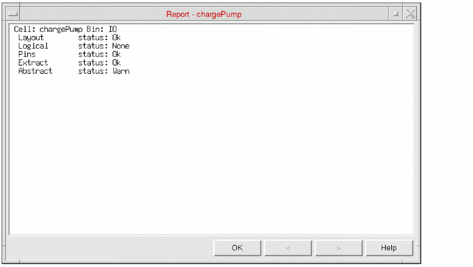

Viewing a Cell Status Report in Abstract Generator
The cell report provides detailed information about the status of a cell, with explanations of any messages generated for the different views present. Only views that have a valid status are reported.
- Select the cell or cells for which you wish to view the report.
-
Choose Cells – Report from the menu.
 - If you select more than one cell, the arrow buttons at the bottom of the form allow you to move backward and forward through the selected set.
In the above figure, the arrow buttons are not enabled because only one cell has been selected in the Cell pane.
Related Topics
Editing Cellviews in Virtuoso Layout Editor in Abstract Generator
Return to top